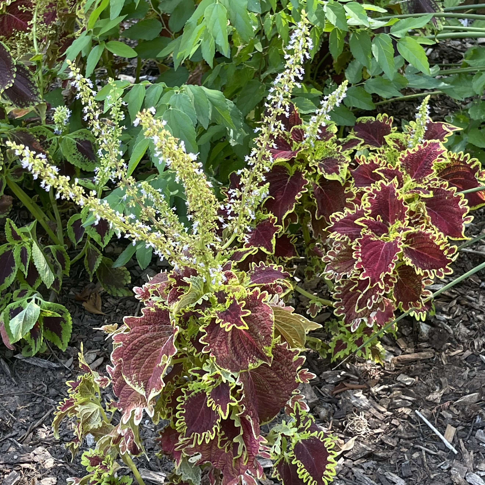

Coelus
Rockwell
Monotype
Purportedly from Iran, the pomegranate has been cultivated prolifically and features in many ancient civilizations. It has a variety of culinary, medicinal, and cosmetic applications.
As a modern twist on older humanist styles, Arial today is used broadly in anything that incorporates type. This variety in use matches that of the pomegranate's.